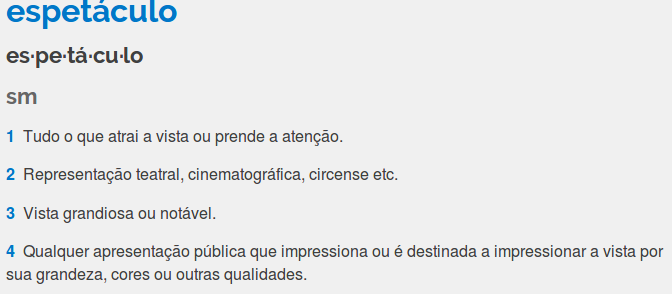
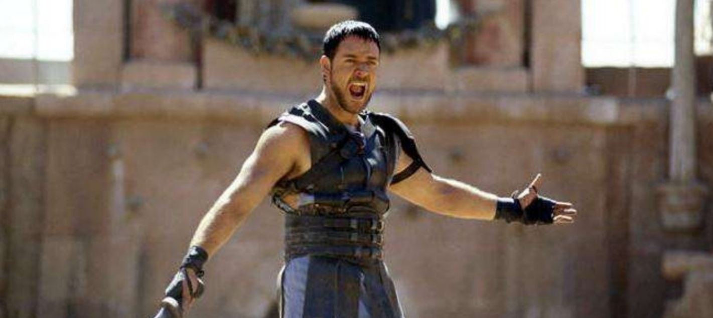
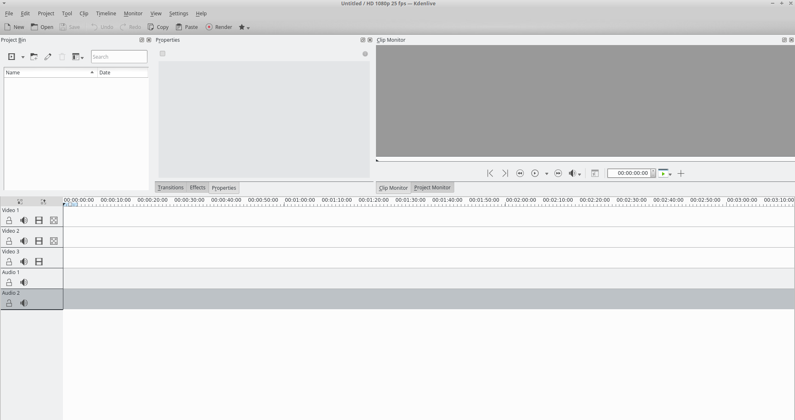

Culture Jamming & Edição de Vídeos
É possível subverter a mídia tradicional com técnicas básicas de edição de vídeo.
Quem sou eu?
— Humanas?
— Midialogia
— Mídia Independente
— Madrid
— Nova Iorque
— Ensino
— Dados Abertos
— Hackathona
— Mestrado
— E agora?
E vocês, quem são?
Planejamento
O que faremos? Como?
Exercícios práticos de edição de vídeos, em que alunos "recortam" programas e comerciais da TV e do cinema para criar mensagens diferentes das originais.
Construcionismo
Construção do conhecimento baseada na realização de uma ação concreta que resulta em um produto palpável

Seymour Papert
Diretrizes
#1 Final Aberto
- Cada um produz o que quer.
- Suas produções dependem de suas ideias.
- Suas ideias dependem de referências.
#2 Referências
- Assistir para discutir.
- Senso crítico e/ou de humor.
- Traga também as suas!
#3 Teoria e Prática
- Tentativa de aproximação.
- Momentos intercalados.
- Sua opinião é bem-vinda!
#4 Instrutor
- Monitoria e direcionamento.
- Sugestões, auxílio com dúvidas.
- Pesquisa conjunta e parceria.
#5 Rabisque!
Culture Jamming
ou "Interferência Culural", em português.
Termo cunhado no início dos anos 80, de técnicas anti-consumismo que pretendem romper ou subverter com a cultura mainstream.
Guy Debord (1931- 1994)
Teórico francês, filósofo, cineasta, membro-fundador da Internacional Situacionista.
Autor da importante obra A Sociedade do Espetáculo, contundente texto sobre a sociedade do consumo e a cultura da imagem.
A Sociedade do Espetáculo [1]
O uso das comunicações de massa nos torna consumidores e espectadores passivos da nossa própria vida, história e poder.
A Sociedade do Espetáculo [2]
O capitalismo moderno mantém o controle social por meio do espetáculo.
Interpretação via Kellner
Acadêmico nascido em 1943, alinhado à Escola de Frankfurt, professor da UCLA.
O Triumfo do Espetáculo
Nas últimas décadas, a indústria cultural multiplicou os espetáculos da mídia para novos espaços e locais, e o próprio espetáculo se tornou um dos princípios de organização da economia, política, sociedade e vida cotidiana."
Definição Michaelis
Desde "sempre", é claro!
"Controle social", "Rituais de governança e poder" (Maquiavel)
Ferramenta de pacificação e despolitização (Guy Debord)
Espetáculos na Mídia
- Economia
- Política
- Sociedade
- Cultura
- Vida cotidiana
Economia do Entretenimento (Guy Debord)
Celebridades
Espetáculos personalizados, fabricados e gerenciados.


Detournment
Jiu-jitsu semiótico, perturbação criativa.
Adbusters
1989. Canadá. Rede global de artistas, ativistas, escritores, estudantes, educadores e empresários que querem avançar no movimento da novo ativismo social.
Em julho de 2011, a revista lançou a hashtag #OCCUPYWALLSTREET no Twitter.
Yes Men
Banksy
Jamming em Vídeo
Mais alguma referência?
Montagem
Efeito Kuleshov
Lev Kuleshov, Rússia, décadas de 1910 e 1920.
Formação do Personagem
Vic Berger
Montagem Paralela (Intelectual ou Dialética)
Montagem Vertical
Concepção global de um filme, mais do que com a relação entre os seus vários planos.
Mais
- Montagem Tonal
- Montagem Métrica
- Montagem Ritmica
Mais ainda
- Jump cut
- Match cut
- Cross-cutting
- Cutting on action
...
Instrumentalização
Básica, mas suficiente.
Programas de Edição
Adobe Premiere
Avid Media Composer
Final Cut Pro
Davinci Resolve
Kdenlive
Pq?
- Livre
- Fácil
- Multi
Live-demo
(adicionar risadas a discursos)
Primeiro Passo
Reunir o material.
Como baixar vídeos do YouTube?
#1 Yout
#2 KeepVid
#3 Plug-ins
Segundo Passo
Editar.
Atalhos:
| S | Selecionar |
| X | Cortar |
| M | Mover bloco |
Exercícios
Propostas Encontro 1
Áudio e Cortes
- Adicionar Risadas
- Discurso Corrigido
- Chuck Norris
- Remover Risadas
- Adição de Música
- Censura Errada
Referência Aula 1
Propostas de Exercícios
- Jornal televisivo com insisência na mesma palavra.
- Comentarista esportivo entrando em contradição.
- Pequeno mockumentary sobre personagem ficício.